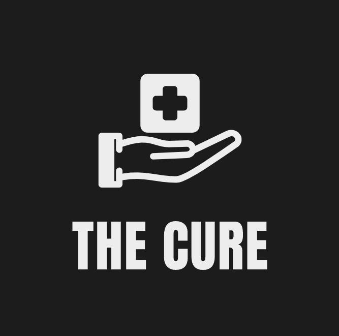

TheCure
VIRUSES
Viruses
How much smaller are most viruses in comparison to bacteria? Quite a bit. With a diameter of 220 nanometers, the measles virus is about 8 times smaller than E.coli bacteria. At 45 nm, the hepatitis virus is about 40 times smaller than E.coli. For a sense of how small this is, David R. Wessner, a professor of biology at Davidson College, provides an analogy in a 2010 article published in the journal Nature Education: The polio virus, 30 nm across, is about 10,000 times smaller than a grain of salt. Such differences in size between viruses and bacteria provided the critical first clue of the former’s existence.Toward the end of the 19th century the notion that microorganisms, especially bacteria, could cause disease was well established. However, researchers looking into a troubling disease in tobacco — the tobacco mosaic disease — were somewhat stumped as to its cause.The experiments of Ivanovsky, Beijerinck and others that followed only pointed to the existence of viruses. It would take a few more decades before anyone actually saw a virus. According to a 2009 article published in the journal Clinical Microbiology Reviews, once the electron microscope was developed in 1931 by German scientists Ernst Ruska and Max Knoll, the first virus could be visualized with the new high resolution technology. These first images taken by Ruska and colleagues in 1939 were of the tobacco mosaic virus. Thus, the discovery of viruses came full circle.
Structure
Viruses teeter on the boundaries of what is considered life. On one hand, they contain the key elements that make up all living organisms: the nucleic acids, DNA or RNA (any given virus can only have one or the other). On the other hand, viruses lack the capacity to independently read and act upon the information contained within these nucleic acids.
“A minimal virus is a parasite that requires replication (making more copies of itself) in a host cell,” said Jaquelin Dudley, a professor of molecular biosciences at the University of Texas at Austin. “The virus cannot reproduce itself outside the host because it lacks the complicated machinery that a [host] cell possesses.” The host’s cellular machinery allows viruses to produce RNA from their DNA (a process calledtranscription) and to build proteins based on the instructions encoded in their RNA (a process called translation).
When a virus is completely assembled and capable of infection, it is known as a virion. According to the authors of “Medical Microbiology 4th Ed.” (University of Texas Medical Branch at Galveston, 1996), the structure of a simple virion comprises of an inner nucleic acid core surrounded by an outer casing of proteins known as the capsid. Capsids protect viral nucleic acids from being chewed up and destroyed by special host cell enzymes called nucleases. Some viruses have a second protective layer known as the envelope. This layer is usually derived from the cell membrane of a host; little stolen bits that are modified and repurposed for the virus to use.
Function
The primary role of the virus or virion is to “deliver its DNA or RNA genome into the host cell so that the genome can be expressed (transcribed and translated) by the host cell,” according to "Medical Microbiology."
First, viruses need to access the inside of a host’s body. Respiratory passages and open wounds can act as gateways for viruses. Sometimes insects provide the mode of entry. Certain viruses will hitch a ride in an insect’s saliva and enter the host’s body after the insect bites. According to the authors of “Molecular Biology of the Cell, 4th Ed” (Garland Science, 2002) such viruses can replicate inside both insect and host cells, ensuring a smooth transition from one to the other. Examples include the viruses that cause yellow fever and dengue fever.
Viruses will then attach themselves to host cell surfaces. They do so by recognizing and binding to cell surface receptors, like two interlocking puzzle pieces. Many different viruses can bind to the same receptor and a single virus can bind different cell surface receptors. While viruses use them to their advantage, cell surface receptors are actually designed to serve the cell.
After a virus binds to the surface of the host cell, it can start to move across the outer covering or membrane of the host cell. There are many different modes of entry. HIV, a virus with an envelope, fuses with the membrane and is pushed through. Another enveloped virus, the influenza virus, is engulfed by the cell. Some non-enveloped viruses, such as the polio virus, create a porous channel of entry and burrow through the membrane.
Once inside, viruses release their genomes and also disrupt or hijack various parts of the cellular machinery. Viral genomes direct host cells to ultimately produce viral proteins (many a time halting the synthesis of any RNA and proteins that the host cell can use). Ultimately, viruses stack the deck in their favor, both inside the host cell and within the host itself by creating conditions that allow for them to spread. For example, when suffering from the common cold, one sneeze emits 20,000 droplets containing rhinovirus or coronavirus particles, according to "Molecular Biology of the Cell." Touching or breathing those droplets in, is all it takes for a cold to spread.